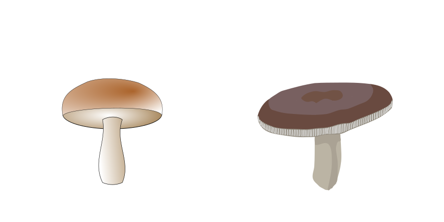
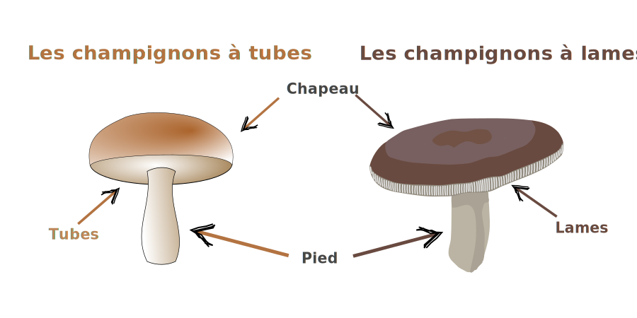

Comment faire pour identifier un champignon ?
Pour commencer, essayons d'apprendre à reconnaitre
les différentes parties qui composent la face visible des champignons grâce à cette flashcard


Compteur d'essais :
0